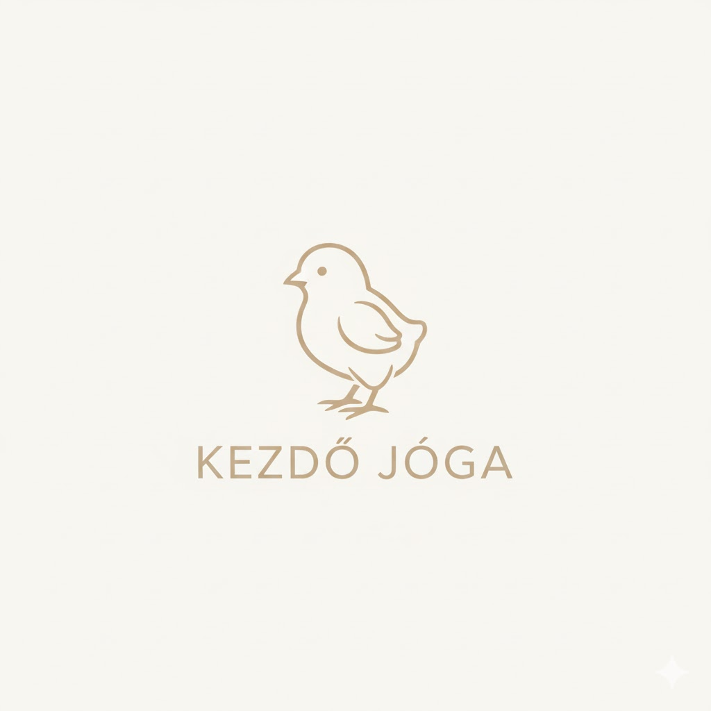
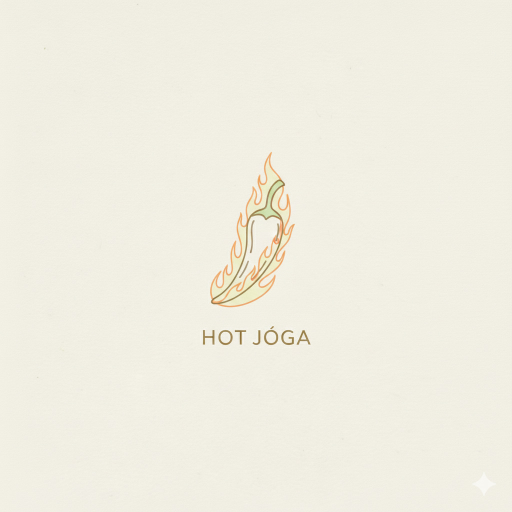
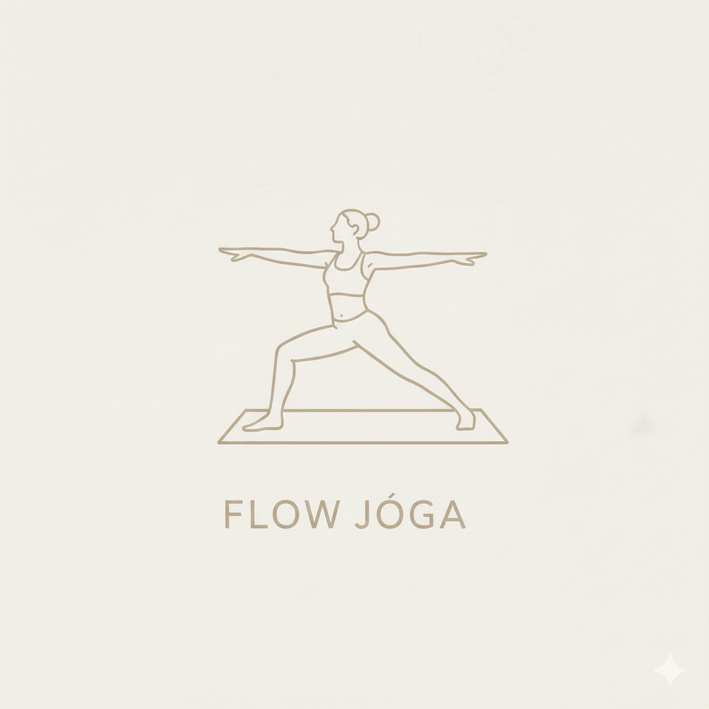
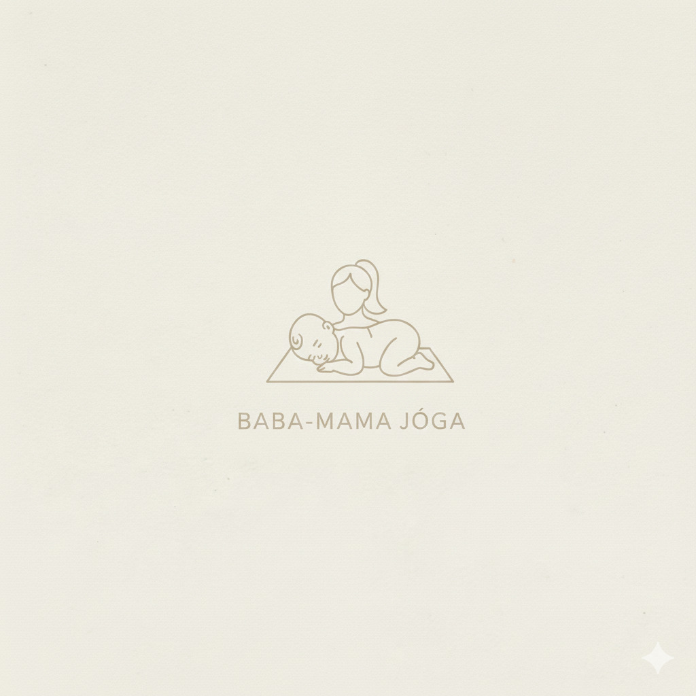
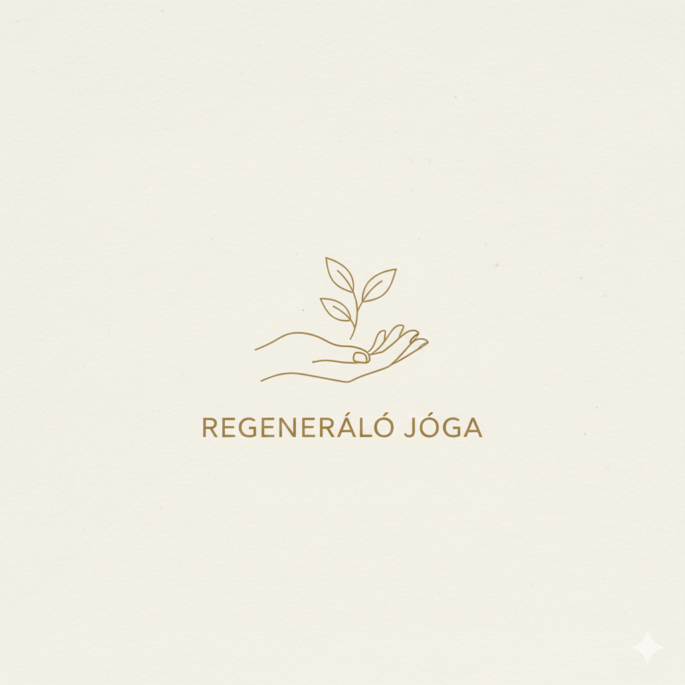

Óratípusok
Kezdő joga
Lassú, vezetett órák kezdőknek.
Megtanuljuk az alapvető ászanákat, a helyes légzéstechnikát, és a biztonságos gyakorlást. Tökéletes kiindulópont a jóga világába.

FoglalásPilates
Erősítő és tartásjavító gyakorlatok.
Fejlesztő gyakorlatok, melyek a core izmokra fókuszálnak. A stabil törzsizomzat segít megelőzni a hátfájást és javítja a test kontrollját.
 Foglalás
Foglalás
Gerinc joga
Kímélő torna a hát egészségéért.
Célja a gerinc menti izmok nyújtása és erősítése. Ideális ülőmunkát végzőknek és mindazoknak, akik csökkenteni szeretnék a hátfájdalmat.
 Foglalás
Foglalás
Hot joga
Intenzív méregtelenítő gyakorlás
Egy fűtött teremben végzett jógagyakorlás, mely fokozza a hajlékonyságot és elősegíti a méregtelenítést. Nagyobb állóképességet igényel.

FoglalásFlow joga
Dinamikus mozgás és légzés összehangolása.
A Flow jóga, vagy Vinyasa, a mozdulatok folyamatos áramlására épül. Erősíti az izmokat, növeli a kitartást és elmélyíti a légzés-test kapcsolatot.

FoglalásBaba-mama joga
Gyengéd mozgás és kapcsolódás az anyukáknak.
A szülés utáni regenerációt segítő gyakorlatok, melyek közben a babák is részt vehetnek az órán. Segít a kismedencei izmok erősítésében és a stressz oldásában.

FoglalásRegeneráló joga
Mély ellazulás és passzív nyújtás a stressz ellen.
Hosszú ideig kitartott, támasztott pózok (pl. párnákkal, takarókkal) segítségével érjük el a mély izomlazulást és a teljes idegrendszeri regenerációt. Tökéletes levezetés.

Foglalás